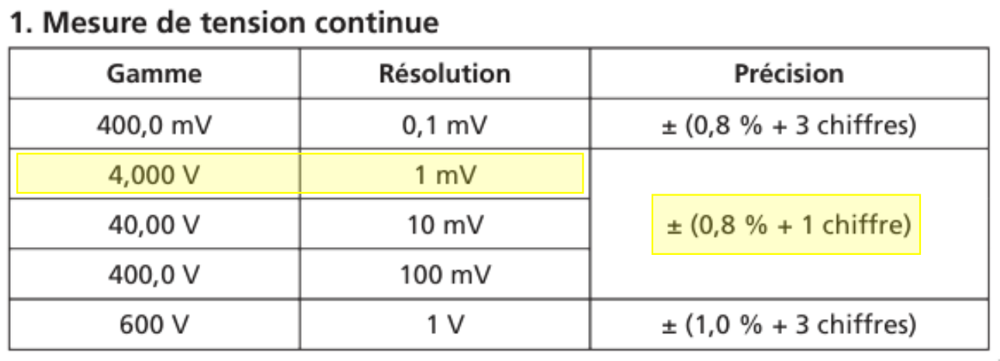
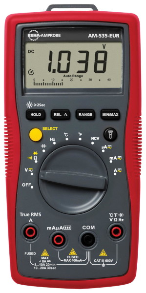
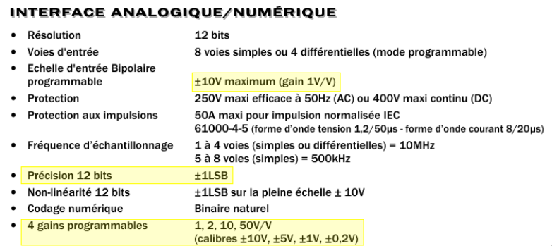

On donne l'exemple d'une mesure de tension continue avec un multimètre, avec l'extrait de la notice de l'appareil.
On commence par déterminer la gamme de mesure (c'est la plus petite valeur supérieure à la valeur mesurée). Puis on lit une précision de ±0.8 % + 1 chiffre. Dans le cas présent, l'incertitude sur la tension est : $$\delta u = 0{,}008 \times 1{,}038 + 0{,}001 = 0{,}009 \text{ V}$$
1 chiffre signifie qu'il faut ajouter la valeur 1 à la position du dernier chiffre affiché.
On utilise la notice de l'appareil.

On cherche l'incertitude \(\delta f\) sur la valeur \(f(x_1, x_2, x_3)\) d'une fonction de \(x_1\), \(x_2\) et \(x_3\), connaissant les incertitudes \(\delta x_1\), \(\delta x_2\) et \(\delta x_3\).
La formule générale est : $$\delta f = \sqrt{\left(\frac{\partial f}{\partial x_1}\delta x_1\right)^2 + \left(\frac{\partial f}{\partial x_2}\delta x_2\right)^2 + \left(\frac{\partial f}{\partial x_3}\delta x_3\right)^2}$$La notation \(\frac{\partial f}{\partial x_1}\) signifie la dérivée de \(f\) par rapport à \(x_1\), on fait comme si toutes les autres variables étaient constantes.
Par exemple, si on mesure un angle \(i\) avec une incertitude \(\delta i\) et un indice \(n\) avec une incertitude \(\delta n\), alors l'incertitude sur \(f(n,i)=n\sin(i)\) est :
$$\delta(n\sin(i)) = \sqrt{\left(\frac{\partial f}{\partial n}\delta n\right)^2 + \left(\frac{\partial f}{\partial i}\delta i\right)^2} = \sqrt{(\sin(i)\delta n)^2 + (n\cos(i)\delta i)^2} $$import numpy as np
# skiprows permet d'ignorer la première ligne du fichier qui contient les titres des colonnes.
data = np.loadtxt("data.txt", skiprows=1)data.txt. Les données sont chargées dans le tableau numpy appelé data.
data = np.loadtxt("fichier.txt") un fichier qui comporte plusieurs colonnes, par exemple :
temps distance
1 1.234
2 2.432
3 3.432
...
On peut extraire la liste des temps et la liste des distance dans des tableau numpy en faisant
t = data[:,0]
d = data[:,1]lx et ly sont des listes (tableaux numpy ou listes python) contenant les valeurs de x et de y. lux et luy sont des listes contenant les incertitudes associées à x et y. On trace le graphique représentant y = f(x) avec les barres d'erreur correspondantes de la manière suivante :
plt.errorbar(lx, ly, yerr=luy, xerr=lux, fmt="o", capsize=3, zorder=0) lx et ly sont des listes de valeurs de x et y (listes python ou tableaux numpy), on peut déterminer le coefficient directeur a et l'ordonnée à l'origine b de la droite passant au plus proche des points en faisant
a, b = np.polyfit(lx, ly, 1)lx et ly sont des listes de valeurs de x et y (tableaux numpy), on peut déterminer le coefficient directeur a de la droite d'équation y=ax passant au plus proche des points en faisant
a = np.sum(lx*ly)/np.sum(lx**2)lx et ly sont des listes de valeurs de x et y (listes python ou tableaux numpy), lux et luy sont les listes des incertitudes-type sur les valeurs de x et y. On peut déterminer les paramètres a et b de la droite passant au mieux par les points ainsi que leur incertitude associée en faisant :
Nexp = 1000 # Nombre de simulations de points de mesure
la = []
lb = []
for k in range(Nexp):
temp_x = np.random.normal(lx, lux) # Simulation aléatoire de valeurs de x
temp_y = np.random.normal(ly, luy) # Simulation aléatoire de valeurs de y
a,b = np.polyfit(temp_x, temp_y, 1) # Régression linéaire
la.append(a)
lb.append(b)
print("Équation de la droite : y=ax+b")
print("a = {} ± {}".format(np.average(la), np.std(la)))
print("b = {} ± {}".format(np.average(lb), np.std(lb))) x1, x2 et x3 sont des grandeurs mesurées avec des incertitudes ux1, ux2 et ux3. On peut déterminer l'incertitude sur une grandeur y=f(x1, x2, x3) en faisant :
def f(x1,x2,x3):
return np.sin(x1)*np.sqrt(x3)/x2**2 #Fonction choise pour l'exemple
Nexp=1000 # Nombre de simulations de points de mesure
ly = [] # On initialise une liste de puissances vide
for j in range(Nexp):
x1_j = np.random.normal(x1, ux1) # valeur de x1 aléatoire
x2_j = np.random.normal(x2, ux2) # valeur de x2 aléatoire
x3_j = np.random.normal(x3, ux3) # valeur de x3 aléatoire
ly.append(f(x1_j, x2_j, x3_j))
dy = np.std(np.array(ly)) # Calcule l'écart-type de la liste des valeurs de y
lx et ly sont des listes de valeurs de x et y (tableaux numpy), luy est une liste contenant les incertitudes sur les valeurs de y. On souhaite déterminer les valeurs des paramètres p1, p2, p3 tels que la courbe yth=f(lx, p1, p2, p3) passe au plus près des données expérimentales. Par exemple, on cherche à déterminer A et τ tels que la fonction y = A(1-exp(-t/τ)) décrive au mieux les données.
from scipy.optimize import curve_fit
import numpy as np
import matplotlib.pyplot as plt
def f(x, A, tau):
return A*(1-np.exp(-x/tau))
lx = np.linspace(0,10, 1000)
ly = (1-np.exp(-lx/3))+np.random.normal(np.zeros(len(lx)),0.01)
luy = np.ones(1000)
popt,_ = curve_fit(f, lx, ly, [1], 1/luy)
A,tau = popt
plt.plot(lx, ly)
plt.plot(lx, A*(1-np.exp(-lx/tau)))
plt.show()